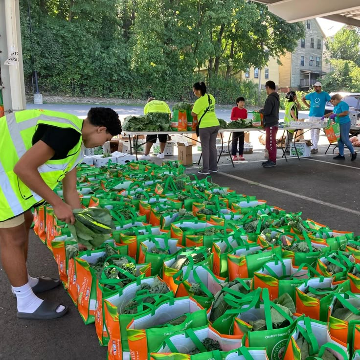

Projetos e Voluntariado
Projetos em Destaque
Projetos em destaque com metas e resultados.
Seja Voluntário
O voluntariado é a alma da nossa organização. Precisamos de pessoas dedicadas para nos ajudar com logística, ensino, preparo de alimentos e muito mais.
Ao se cadastrar, você entra para nossa lista de voluntários e será contatado para eventos e ações em sua região.
Cadastre-se Agora

Como Doar
Sua doação transforma vidas. 100% dos valores recebidos são aplicados diretamente nos projetos.